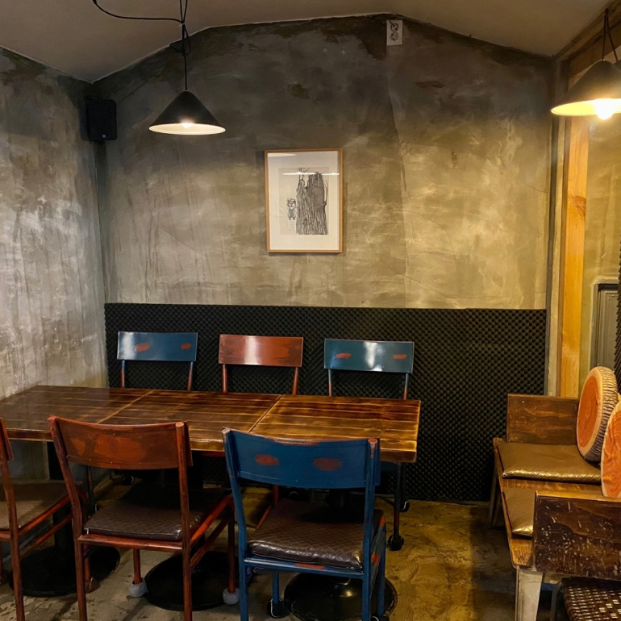
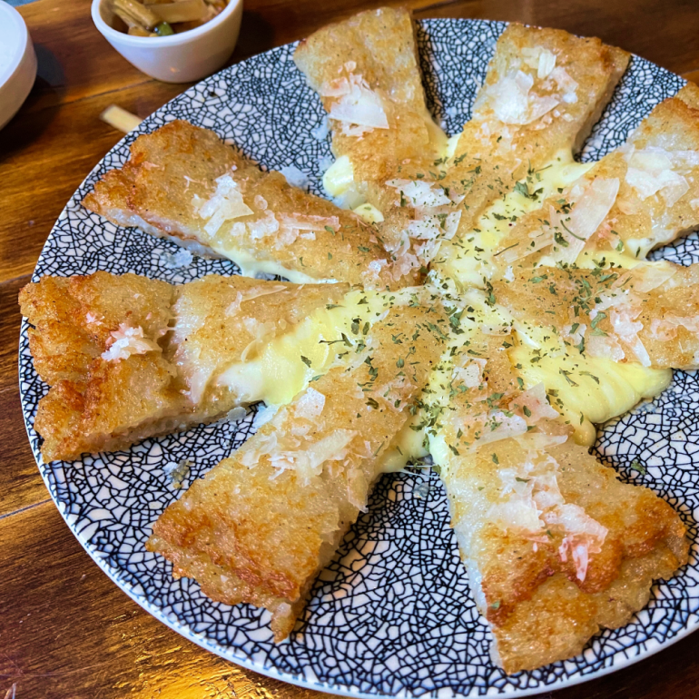
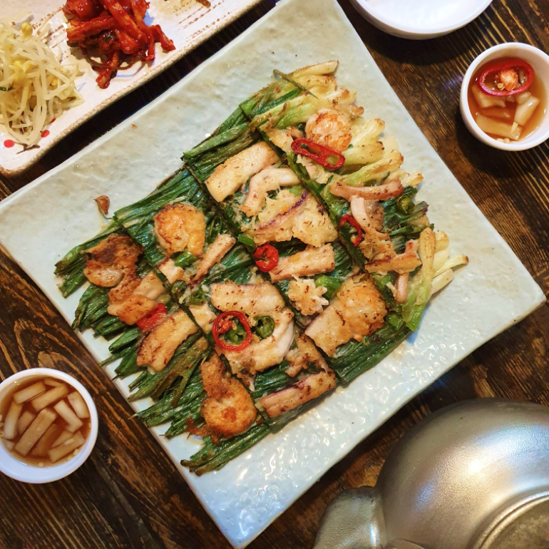
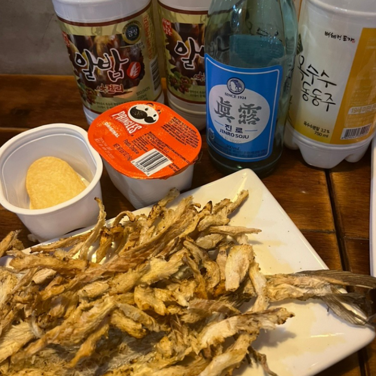
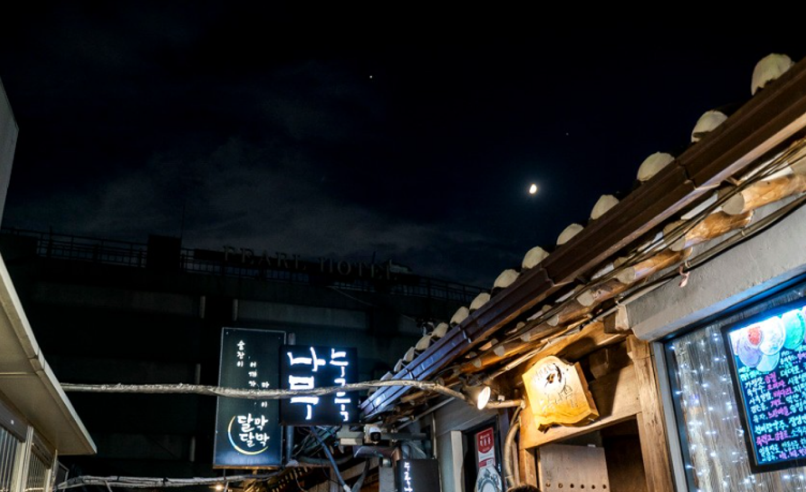

3号線安国駅のすぐ前の路地に位置する麹木。麹木が位置する仁寺洞は都心の中で古いが貴重な伝統物が交流される空間で、その道を歩くだけで伝統の趣を感じることができる。お店の近くのサムジキルで特別なアイテムを手に入れることができるかもしれないので、一緒に立ち寄ってみることをおすすめする
麹木は秘密のアジトであるかのように訪れるのは少し大変だが、店に到着すれば居心地の良い幸せが始まる。麹木ならではの特別メニューである厚い「チーズジャガイモチヂミ」と様々な韓国酒で一日をゆっくり仕上げてみよう。

住所 : ソウル鍾路区仁寺洞16キル13
最寄りの地下鉄駅 : 安国(アングク)駅(徒歩1分)
ホームページ : -
近くの観光地

- サムジキル
- 住所 : ソウル鍾路区仁寺洞キル44サムジキル
- ホームページ : https://smartstore.naver.com/ssamzigil
- 曹渓寺
- 住所 : ソウル鍾路区郵政局路55
- ホームページ : https://www.jogyesa.kr/